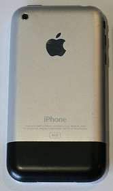

Iphone 1° Geração
O iPhone (também chamado de iPhone Original e iPhone 3G) é a primeira geração da linha de smartphones iPhone desenvolvido e comercializado pela Apple Inc. Foi anunciado em 9 de janeiro de 2007 e lançado nos Estados Unidos em 29 de junho de 2007 antes de ser comercializado na Europa. É caracterizado quad-band GSM com GPRS e EDGE.
Atualmente, o iPhone 2G se encontra fora de linha e não é mais fabricado.
História
Desenvolvimento
Desenvolvimento do iPhone começou quando Steve Jobs, CEO de Apple Inc., teve a ideia de usar uma tela multi-touch para interagir com um computador de uma maneira em que ele pode digitar diretamente no display, essencialmente, na remoção física de teclado e mouse. Jobs recrutou um grupo de engenheiros da Apple para investigar a ideia como um projeto paralelo. Quando Jobs revista o protótipo e sua interface com o usuário, ele teve uma segunda ideia de implementar a tecnologia em um celular.
A Apple criou o dispositivo durante uma colaboração sem precedentes e secreto com a AT&T, anteriormente Cingular Wireless. O custo estimado de desenvolvimento da colaboração foram 150.000 mil dólares ao longo de um período de trinta meses. A Apple rejeitou o projeto que tinha rendido o Motorola ROKR E1, uma grande colaboração com a Motorola. Em vez disso, a Cingular Wireless deu a Apple deu a liberdade para desenvolver o iPhone ela mesma.
O iPhone original foi introduzido por Steve Jobs em 9 de janeiro de 2007, em uma palestra na Macworld Conference & Expo, realizada em Moscone West, em San Francisco, Califórnia. Em seu discurso, Jobs disse: "Eu estou ansioso por este momento há dois anos e meio" e que "hoje, a Apple vai reinventar o telefone". Jobs apresentou o iPhone como uma combinação de três dispositivos: um iPod widescreen com controles sensíveis ao toque, um telefone celular revolucionário e um comunicador de internet inovador.
Lançamento
O iPhone foi lançado em 29 de junho de 2007 nos Estados Unidos, onde centenas de pessoas formaram filas fora das Apple Stores e lojas da AT&T dias antes de os dispositivos serem lançados. Para evitar uma repetição do fato que aconteceu no lançamento do PlayStation 3, que causou assaltos e até mesmo um tiro, policiais foram contratados para proteger as lojas durante a noite. Mais tarde, foi disponibilizado no Reino Unido, França e Alemanha em novembro de 2007, e a República da Irlanda e Áustria, no outono de 2008.
Seis em cada dez americanos entrevistados disseram que sabiam a data de lançamento do iPhone.
Design
O design do iPhone original foi centrado em torno de uma tela de 3,5 polegadas (89 mm) touchscreen. O iPhone original apresenta dois botões físicos que têm se mantido consistente ao longo de gerações mais recentes de iPhone. O dispositivo apresenta uma moldura de metal. A parte traseira é feita de alumínio com base de policarbonáto preto. A câmera de 2 Megapixels fica localizado no canto esquerdo superior da parte traseira do iPhone. A tomada do fone de ouvido é incompatível com a maioria dos fones de ouvido sem o uso de um adaptador. Outros modelos não tem esse problema.
O iPhone original é o único modelo do iPhone não disponível em várias cores, os outros modelos estão disponíveis em preto ou branco.
Especificações
As seguintes especificações estão listadas no website da Apple:
- Tamanho da tela: 8.9 cm (3.5 in)
- Resolução da tela: 320x480 pixels em 160 dpi
- Método de entrada: Tela Multi-touch sensível ao toque (O botão "home" é o único botão frontal físico.)
- Sistema Operacional: iOS 3.1.3 (versão final)
- Armazenamento: 8 GB e 16GB, memória flash interna
- Quad band GSM (GSM 850, GSM 900, GSM 1800, GSM 1900)
- Wi-Fi (802.11b/802.11g), EDGE e Bluetooth 2.0 com EDR
- Câmera de 2.0 megapixel
- Bateria interna não-removível e recarregável, Com autonomia aproximada de 8 horas de conversação, 6 horas de uso de internet, 7 horas de reprodução de vídeo e mais de 24 horas de reprodução de música, além de aproximadamente 250 horas em standby
- Tamanho: 115×61×11.6 mm (4.5×2.4×0.46 in)
- Peso: 135 g (4.8 oz)
Conteúdo da embalagem
- iPhone
- Fones de ouvido estéreo
- Dock
- Conector USB para Dock
- Adaptador de força USB
- Documentação (incluindo dois adesivos da Apple)
- Flanela de limpeza/polimento
- (Um modelo de dock que carrega o iPhone e Apple Bluetooth Headset é vendido separadamente.)
|  Parte traseira de um iPhone original feita de metal e plástico preto. |

Recepção
O The New York Times e The Wall Street Journal publicaram críticas positivas, mas cautelosas, as suas críticas principais foram quanta a velocidade lenta da AT&T, a incapacidade de se conectar usando serviços 3G.
O colunista de tecnologia do Wall Street Journal,
Walt Mossberg, concluiu que "apesar de algumas falhas e omissões de
recursos, o iPhone é, em geral, um belo avanço para computadores de
bolso.
A Time Magazine o nomeou a Invenção do Ano em 2007.